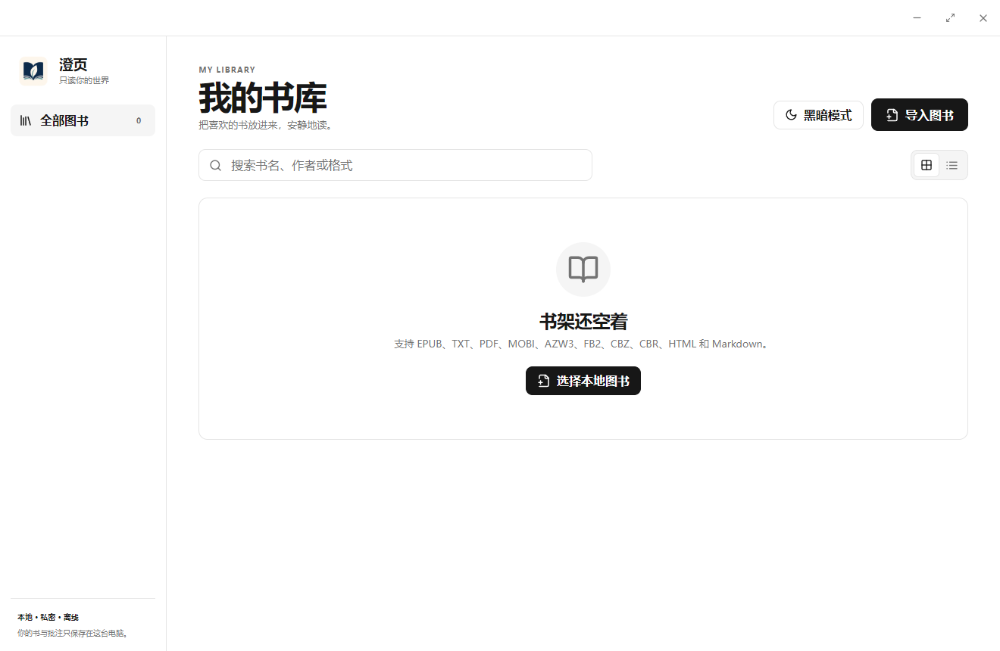

05 / 个人项目 · Windows 桌面阅读器
澄页 Clearleaf
只读你的世界。
从本地电子书出发，将书库管理、阅读设置、进度和批注放在同一套桌面体验中。让用户打开自己的文件，回到上次阅读的位置。

从文件到阅读，缩短开始的路径。
本地电子书可能分散在多个文件夹，格式、排版和阅读进度也各不相同。澄页将导入、整理、打开和继续阅读串成连续流程；书库提供按书名、作者或格式搜索，以及网格与列表视图。
读书时，界面退后一步。
多格式导入
入口覆盖 EPUB、TXT、PDF、MOBI、AZW3、FB2、CBZ、CBR、HTML 和 Markdown；通过不同解析路径呈现内容。
可调整的阅读环境
提供纸张、护眼及夜间等主题；字体、字号、行距、页边距和亮度可按偏好调整。
定位与阅读记录
目录和全文搜索帮助定位；书签、划线批注、笔记与阅读进度保存在本机。
连续阅读与操作
支持翻页及滚动等阅读模式、键盘操作和全屏；阅读设置与书库状态持续保存。
桌面壳与阅读引擎各司其职。
Electron 提供本地文件访问和桌面窗口，React 组织书库与阅读界面；阅读层复用 Foliate 等开源能力处理电子书内容。界面、文件桥接与阅读状态共同组成产品，复用的格式解析能力有清晰边界。
项目已在 GitHub 以 MIT 许可证开源，提供源码与构建入口。
实现范围与交付边界
已提供 Windows 桌面应用。支持格式来自当前应用入口与源码，不代表所有文件、加密书籍或复杂排版都已逐一兼容。书库、进度和批注保存在本机，作品集未附带用户图书、阅读数据或安装包。
本案例基于本机应用和源码整理，未加入尚未验证的使用量、性能提升或商业化结果。